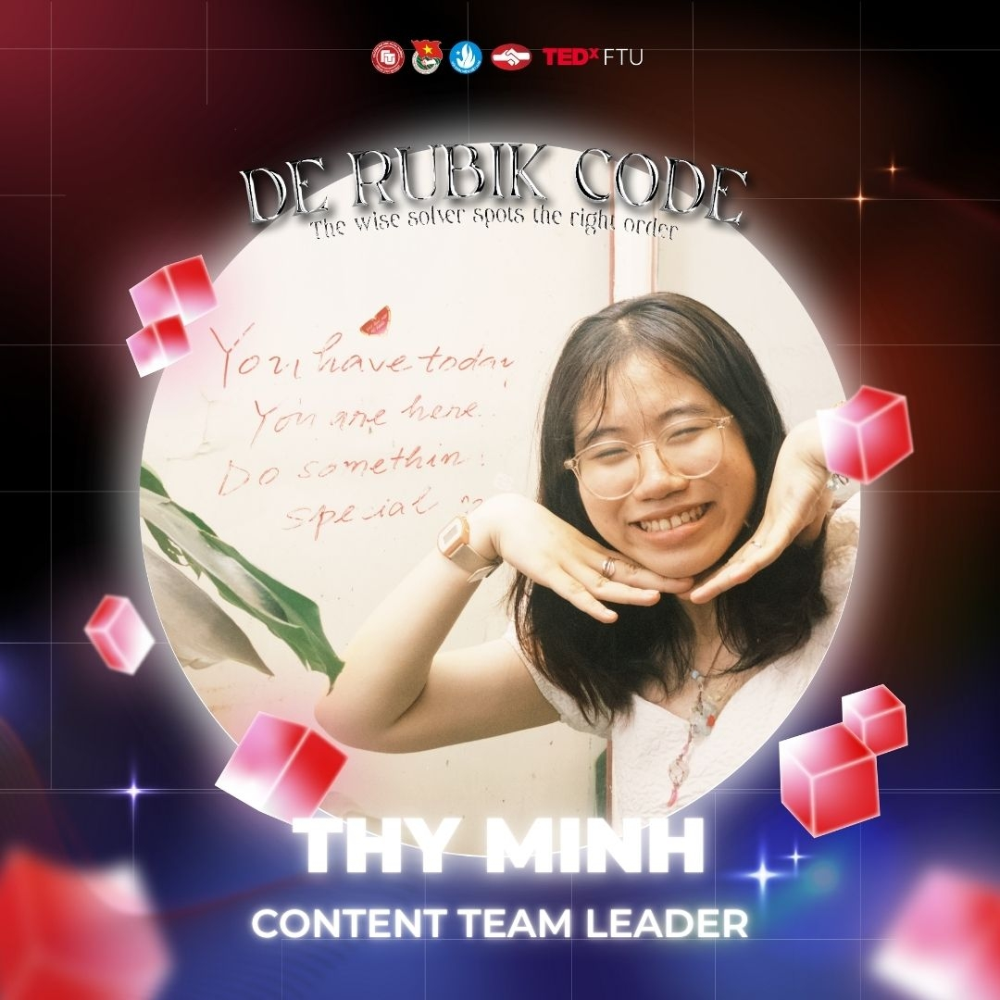
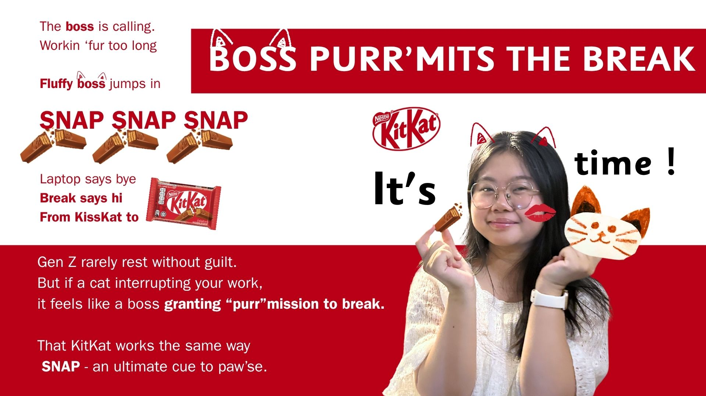
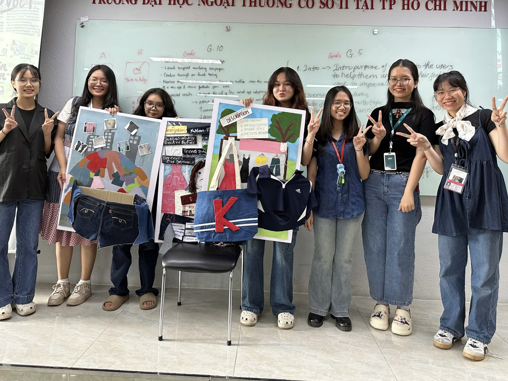

mặt nước .
ở dưới ánh nắng mặt trời,
mặt nước vỡ ra thành những mảnh sáng li ti.
thy đứng ở đó,
thấy mình nhẹ đi,
lơ lửng giữa lớp sáng chói và phần nước chưa chạm tới.
mặt nước vỡ ra thành những mảnh sáng li ti.
thy đứng ở đó,
thấy mình nhẹ đi,
lơ lửng giữa lớp sáng chói và phần nước chưa chạm tới.
mơ mộng giữa thực tại và ảo ảnh
thy cho mình bay giữa những ý tưởng
khi những đốm sáng chỉ là một vệt mờ,
rồi dần dần hiện ra khi nhìn đủ lâu.
và có lẽ,
chỉ khi đi sâu hơn một chút,
những gì còn lại
mới bắt đầu rõ hình.
thy cho mình bay giữa những ý tưởng
khi những đốm sáng chỉ là một vệt mờ,
rồi dần dần hiện ra khi nhìn đủ lâu.
và có lẽ,
chỉ khi đi sâu hơn một chút,
những gì còn lại
mới bắt đầu rõ hình.


TEDxFTU
dưới mặt sóng.
dưới mạch sóng ngầm,
thy uốn nắn concept cho đến khi nó thành hình,
nhắm nghiền mắt,
tưởng tượng ra từng phần sân khấu,
từng âm thanh, những mảnh ánh sáng...
dần rơi, vào đúng chỗ.



giữa dòng
thời gian co rút

giữa một mớ bòng bong
giữa dòng chảy không ngừng của những ý tưởng
thy "tách" khỏi nghĩ ngợi.
vùng sâu
lặn xuống vùng sâu, để tìm thấy ánh sáng
giữa những vùng sáng tối,
giữa những điều cũ/ mới
vật lộn
để nhận ra
luôn có gia vị cũ và nguyên liệu mới
hay nguyên liệu cũ và gia vị mới
Góc nhìn đảo lộn. Không còn đúng sai.
giữa những vùng sáng tối,
giữa những điều cũ/ mới
vật lộn
để nhận ra
luôn có gia vị cũ và nguyên liệu mới
hay nguyên liệu cũ và gia vị mới
Góc nhìn đảo lộn. Không còn đúng sai.



đáy vực
chạm nét để thắp sáng dòng chảy.
nổ tung để rực cháy vực sâu.
Tia Chớp
[ TĨNH LẶNG ]